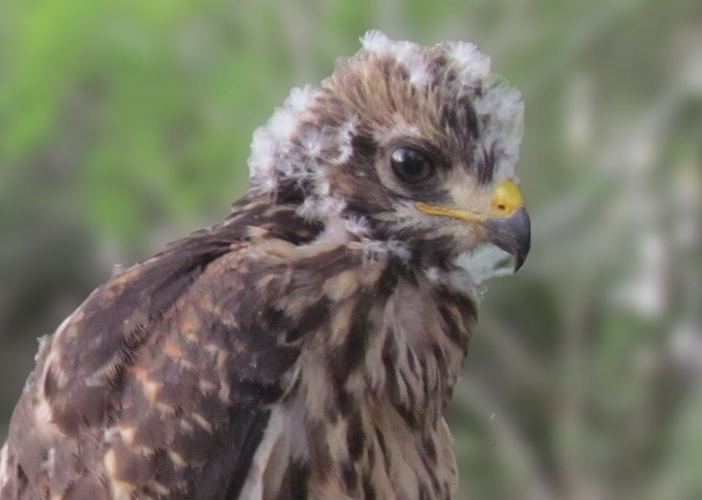
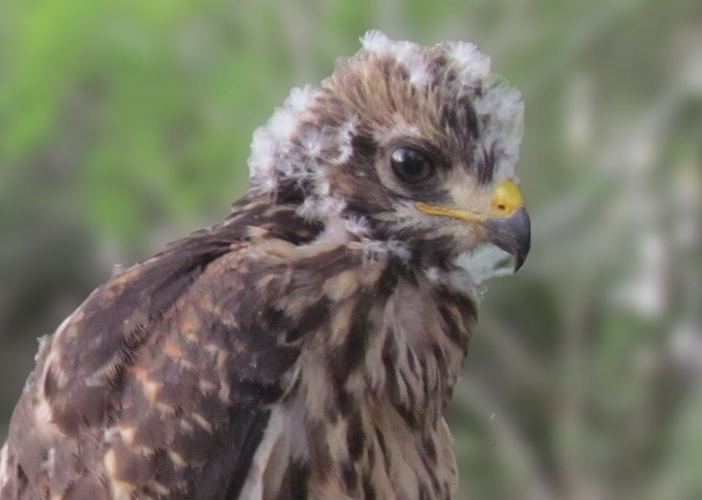
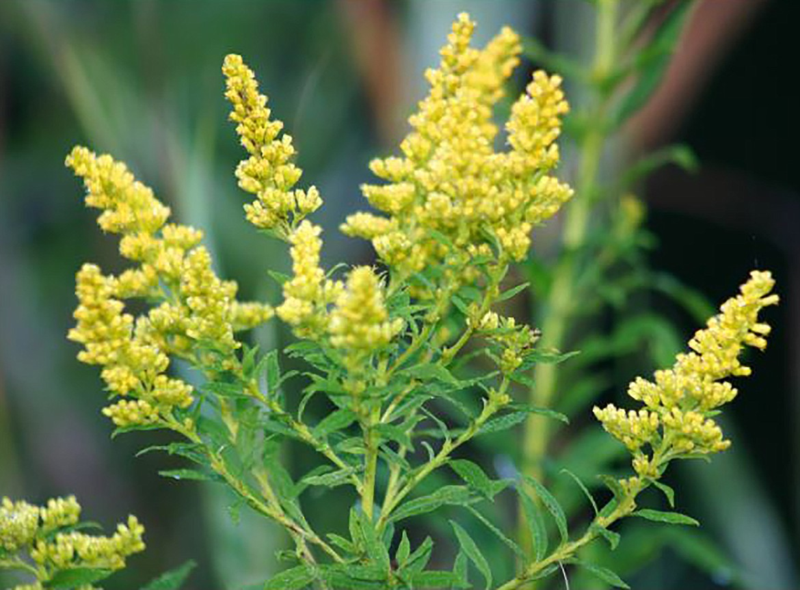
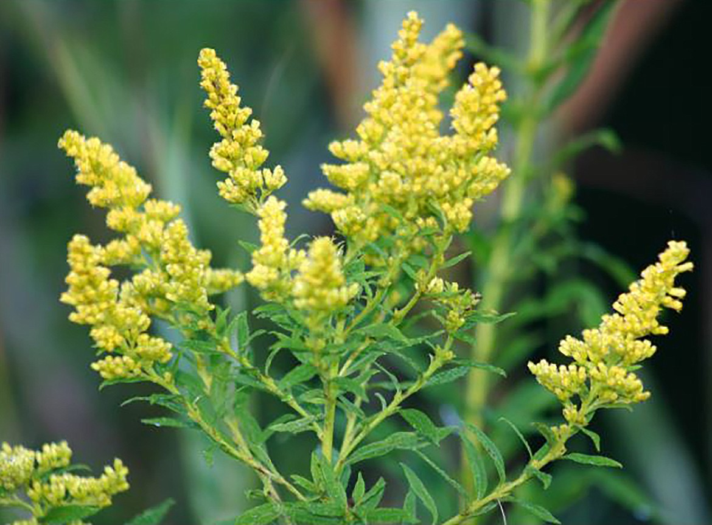

One project I've worked on is a website devlopment task for "Wild Rescues," in which I practiced making templates
and several different content pages. This website includes pictures, descriptions, and important contact information reguarding Wild Rescues
and their work. For more about the website, click on the image below.


This column detils information about none other than me! I've created my own introductory website with some fun facts
and pictures describing myself. I also work on various art projects, from graphic design, photography, painting, and fashion. Any
information about those projects can be found by clicking on the image below or in the naviation bar.

